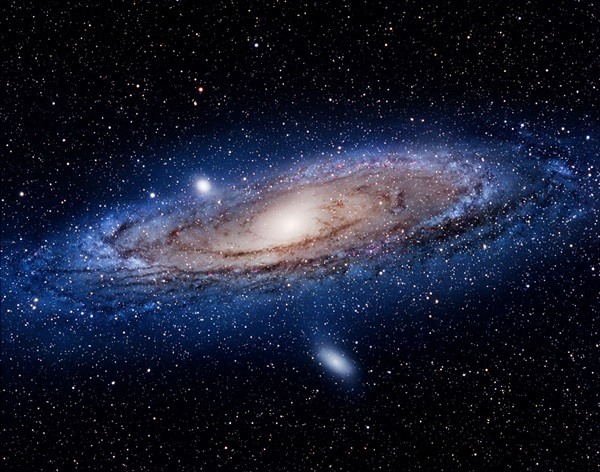

Galaxies
Inroduction
A galaxy is a gravitationally bound system of stars, stellar remnants, interstellar gas, dust, and dark matter. The word galaxy is derived from the Greek galaxias (γαλαξίας), literally "milky", a reference to the Milky Way. Galaxies range in size from dwarfs with just a few hundred million (10
8
) stars to giants with one hundred trillion (10
14
) stars, each orbiting its galaxy's center of mass.
Galaxies are categorized according to their visual morphology as elliptical,spiral, or irregular. Many galaxies are thought to have supermassive black holes at their centers. The Milky Way's central black hole, known as Sagittarius A*, has a mass four million times greater than the Sun. As of March 2016, GN-z11 is the oldest and most distant galaxy observed.

Milky way
A galaxy is a collection of stars and interstellar material held together by gravity. The galaxy our Sun lives in is called the Milky Way or the Galaxy
Read More
Andromeda
The virial mass of the Andromeda Galaxy is of the same order of magnitude as that of the Milky Way, at 1 trillion solar masses (2.0×10
42
).
Read More
Messier 77
Messier 77 or M77, also known as NGC 1068, is a barred spiral galaxy about 47 million light-years away in the constellation Cetus. Messier 77 was discovered by Pierre Méchain in 1780
Read More